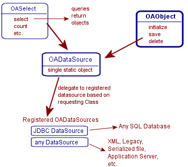

|
OA by ViaOA, Inc. | ||||||||
| PREV PACKAGE NEXT PACKAGE | FRAMES NO FRAMES | ||||||||
See:
Description
| Class Summary | |
|---|---|
| OADataSource | Abstract class used for defining sources for Object storage. |
| OASelect<TYPE> | Helper Class used for submitting and managing queries for any OADataSource. |
| OASelectManager | Manages expired queries. |
Interface used for storing and retrieving Objects from a persistent datasource in a way that is independent from the Objects.
An OADataSource is used to initialize, insert, update, delete and query Objects without using datasource/database specific commands or query languages.
A datasource is any form of service that provides persistent storage and retrieval of data. The most common datasource is for databases that use SQL and have a JDBC driver. Other types of storage could be flat files, XML, streaming to other systems, application servers, web services, legacy systems, object-relational engines, etc.
OADataSource subclasses self-register themselves with the static OADataSource. This static OADataSource can then be used to find a OADataSource based on the Class of the Object that is being used.
Applications can be created that are independent of the datasource. At any time, a new OADataSource can be used without affecting the existing application or objects.
Currently, OA supplies the following OADataSources:
OADataSourceNextNumber: used as a fake datasource.
OADataSourceJDBC: used to work with any JDBC driver, any Relational Database
OADataSourceClient: allows a Client application to use the OADataSource on the Server. (See OAClient, OAServer)
Queries/Selects
The OADataSource Class offers the functionality to query a datasource based on the structure of
the Object structure and not on the Datasource structure. Results from a query are returned
in Objects instead of data or resultsets
Queries are based on using a form of Object Query Language. Property Paths are used to build "Where" and "Sort Order" clauses. A property path is a dot (".") separated list of property names that are used to navigate from a root Class to a property value. To go from object to object, reference property names are used.
OASelect query object
The OASelect Class can be used for creating datasource independent Object Queries. OASelect manages
a query by working directly with a OADataSource. The Hub Collection Class uses OASelect
to perform its queries.
Note: OASelect is a convenience object and is not required for querying an OADataSource
(OADataSources can be used directly).
OADataSource has Pass-through methods, that can be used to run a native command on the datasource.
OADataSource can automatically create autonumber values for object identifier properties. A GUID (Global Identifier) can also be included so that the assigned value is unique across multiple datasources.
OADataSources can use log files to report all changes made to datasource.
Main Classes in this package

OADataSource is an abstract Class that defines a datasource independent interface for data storage and retrieval. OADataSource manages all registered OADataSources.
OASelect works with OADataSource, used to build and manage datasource independent queries that return Objects.
OAObject, Hub Collection and OADataSource
The OADataSource interface was created to offer OA the ability to persist and query objects, eliminating all of the code that is usually required to work with a datasource/database. By establishing an interface, the datasource is totally separated from the objects and application. A makes it very easy to replace an existing OADataSource with a new one. For example, replace a datasource that stored objects in a binary format (using object serialization), with a SQL Database. Or, change database from one vendor to a different vendor.
OAObject automatically works with OADataSource for initializing new object, save(), delete(), getObject(), getHub(), and validating property Id changes.
OAObject calls OADataSource.getDataSource(Class) to receive the OADataSource that is registered to manage a
particular its Class. This OAObject then uses this DataSource to initialize, save, delete.
Hub automatically works with OADataSources for select() queries, using the OASelect Class.
|
© 1999-2013 ViaOA, Inc. All rights reserved | ||||||||
| PREV PACKAGE NEXT PACKAGE | FRAMES NO FRAMES | ||||||||